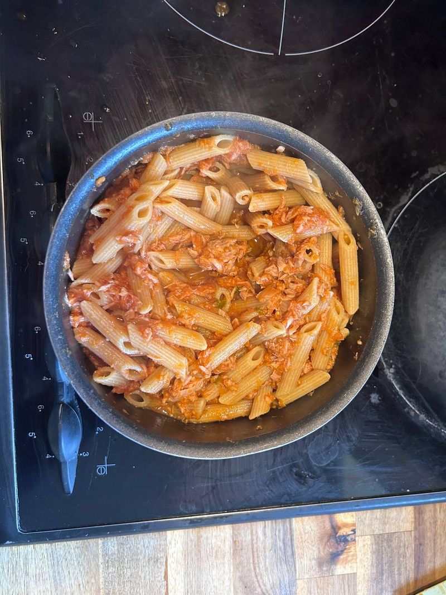

← Recettes


Pâtes Thon-Tomate
⏱️ 15 min
👥 2 pers.
🍽️ Plat
Ingrédients
- 250 g de pâtes (penne, fusilli ou spaghetti)
- 1 boîte de thon (150 g, égoutté)
- 1 conserve de sauce tomate 500 ml
- 1 cube de bouillon de légumes
- Sel, poivre
- Huile d'olive
Préparation
-
1Faire cuire les pâtes dans une grande casserole d'eau salée selon les indications du paquet. Égoutter.
-
2Pendant ce temps, dans une poêle, verser la sauce tomate et émietter le cube de bouillon dedans. Mélanger.
-
3Laisser chauffer la sauce 5 min à feu moyen. Ajouter le thon égoutté et émietter à la fourchette.
-
4Ajouter les pâtes égouttées dans la poêle avec la sauce. Bien mélanger.
-
5Saler, poivrer à votre goût. Servir chaud avec un filet d'huile d'olive.